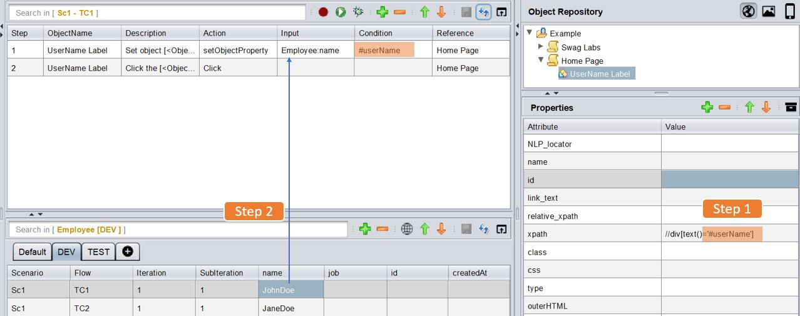

Dynamic Object
How To Change Object Properties At Run Time?
Sometimes it is necessary to use a dynamic property for objects at runtime. Customizing the existing properties at runtime can be done by using setObjectProperty and setglobalObjectProperty functions. setObjectProperty function: will update property of the driving object. setglobalObjectProperty function: will update property for all the objects.
setObjectProperty
-
setObjectProperty action can be used by an object.
-
To provide dynamic property value, use the Input column.
-
To provide flag for replacing the property string, use the condition column.
Description: This function is used to customize any object property based on the requirement during the runtime. User can give a desired value as an input which will replace the matching condition in the object property.
Input Format : @User Defined Text
Condition Column : #Variable name
Usage:
| ObjectName | Action | Input | Condition | Reference | |
|---|---|---|---|---|---|
| Object | setObjectProperty | @value | %var% | PageName | << Hardcoded Input |
| Object | setObjectProperty | Sheet:Column | %var% | PageName | << Input from Datasheet |
| Object | setObjectProperty | %dynamicVar% | %var% | PageName | <<Input from variable |
Example :
There is an object whose xpath is //div[text()='JohnDoe'] and another object whose xpath is //div[text()='JaneDoe']
- Step 1 :
We can define one object in the Object Repository whose xpath can be parameterised as
//div[text()='#userName']. Now the #userName is also used in the Condition column
- Step 2:
We can parameterise the #userName part from a datasheet as shown in the image below :

Internally uses the following Code:
private void setProperty(String key, String value) {
if (!AutomationObject.dynamicValue.containsKey(Reference)) {
Map<String, Map<String, String>> Object = new HashMap<>();
Map<String, String> property = new HashMap<>();
property.put(key, value);
Object.put(ObjectName, property);
AutomationObject.dynamicValue.put(Reference, Object);
} else if (!AutomationObject.dynamicValue.get(Reference).containsKey(ObjectName)) {
Map<String, String> property = new HashMap<>();
property.put(key, value);
AutomationObject.dynamicValue.get(Reference).put(ObjectName, property);
} else {
AutomationObject.dynamicValue.get(Reference).get(ObjectName).put(key, value);
}
}
setglobalObjectProperty
-
setglobalObjectProperty action can be used by Browser object.
-
To provide dynamic property value, use the Input column.
-
To provide flag for replacing the property string, use the condition column.
-
Setting Global Object property is optional. To use object with global property when required, set GlobalObject in the Condition column.
Description: This function is used to customize all objects’ property based on the requirement at runtime.User can give his desired value as an input which will replace the matching condition in the object's property.
Input Format :Input Column : @User Defined Text
Condition Column : #Variable name
Usage:
| ObjectName | Action | Input | Condition | Reference | |
|---|---|---|---|---|---|
| Object | setglobalObjectProperty | @value | %var% | PageName | << Hardcoded Input |
| Object | setglobalObjectProperty | Sheet:Column | %var% | PageName | << Input from Datasheet |
| Object | setglobalObjectProperty | %dynamicVar% | %var% | PageName | <<Input from variable |
Note: It is also possible to use **setObjectProperty**/**setglobalObjectProperty**
for replacing multiple variables at the same time.